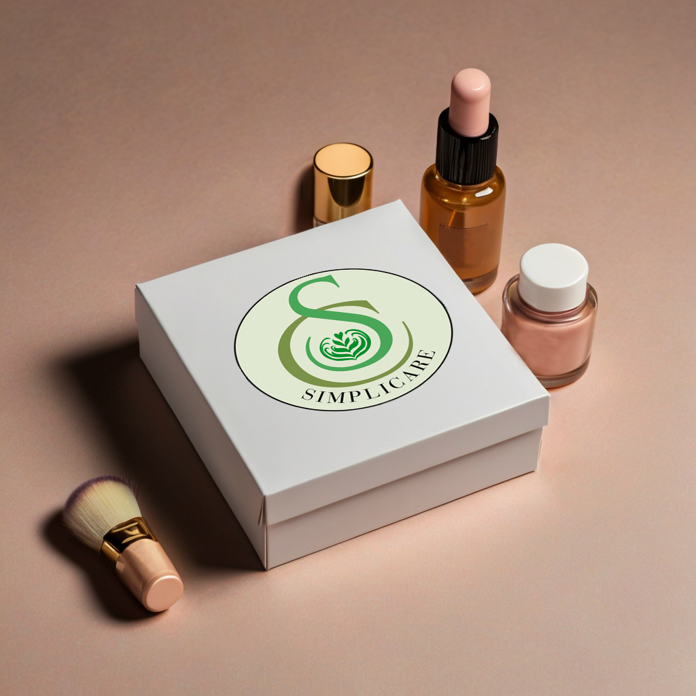

Reflectie en Groei
De afgelopen periode was ontzettend leerzaam. Het heeft me niet alleen geholpen mijn technische vaardigheden verder te ontwikkelen, maar ook mijn commerciële en analytische vaardigheden te versterken. Ik ontdekte hoe ik advertenties echt effectief kan inzetten en hoe SEO mijn online zichtbaarheid kan verbeteren. Het opzetten van advertenties via platformen zoals Instagram en Facebook was in het begin best een uitdaging, maar naarmate ik meer ervaring opdeed en feedback ontving, begreep ik steeds beter hoe ik campagnes moest optimaliseren.
Het schrijven van SEO-vriendelijke blogs was een ander gebied waar ik enorme vooruitgang boekte. Aanvankelijk had ik moeite met het vinden van de juiste zoekwoorden en het structureren van content, maar door de richtlijnen die we kregen en de ervaring die ik opdeed, kan ik nu blogs schrijven die niet alleen waardevol zijn voor de lezer, maar ook goed vindbaar zijn in zoekmachines.
Wat ik wel heb gemerkt, is dat ik meer aandacht had kunnen besteden aan het uitbreiden van mijn adcampagnes en het optimaliseren van de targetingopties. Door meer te focussen op geavanceerde targeting, had ik mijn advertentiebudgetten nog efficiënter kunnen inzetten en de mogelijke conversies kunnen verhogen. Dit is een belangrijk leerpunt voor de toekomst, en ik wil me hier verder in verdiepen. In de toekomst wil ik mij verder verdiepen in advanced targeting voor advertenties en conversieoptimalisatie. Mijn doel is dan ook om meer grip te krijgen op hoe ik met een lager budget hogere resultaten kan behalen.
Persoonlijke Conclusie
Deze minor was voor mij een periode van veel persoonlijke en professionele groei. Het heeft mijn vaardigheden op het gebied van online marketing enorm verbeterd en me geholpen om mijn bedrijf naar een hoger niveau te tillen. Ik heb geleerd hoe ik advertenties en SEO effectief kan inzetten, maar ook hoe ik de data uit campagnes kan gebruiken om mijn marketingstrategieën te verbeteren.
Voor de toekomst wil ik me verder verdiepen in geavanceerde technieken voor targeting en conversieoptimalisatie. Mijn doel is om mijn online marketingstrategie verder te verfijnen en meer waarde te bieden voor mijn onderneming.
Mijn Showcase
Hier worden de hoogtepunten van de projecten tijdens minor weergegeven.
Project Simplicare
Het logo dat ik heb gemaakt voor Simplicare

Prototype van het product dat ik heb gemaakt voor Simplicare
AI-model met product dat ik heb gemaakt voor Simplicare

Doelgroep targeting voor instagram ad

Doelgroep bereik dmv plaatsing voor instagram ad
Resultaten voor instagram ad